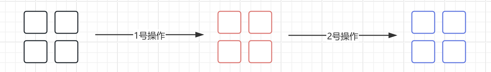
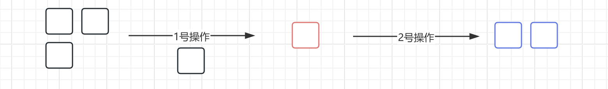

Java 集合与 Stream：工厂方法、有序集合和流处理
集合工厂方法
- List<String> fruit = Arrays.asList("apple", "banana", "orange");
- Set<String> fruitSet = Set.of("apple", "banana", "orange");
- Map<Integer, String> fruitMap = Map.of(1, "apple", 2, "banana") ;
- Map<Integer , String> map1 = ofEntries(entry(1,"aaas") ) ; //静态创建
有序集合功能规范
List<String> list = new ArrayList<>(List.of("aaas", "ssdsa", "qewq")) ;
list.addFirst("qq") ;
list.addLast("aa") ;
list.removeFirst() ;
list.removeLast() ;
//同样支持 LinkedHashSet<String> set = new LinkedHashSet<>(List.of("aaas", "ssdsa", "qewq")) ;
//输出
[ccc, bbb, aaa, ddd]
[ddd, aaa, bbb, ccc]
List<String>list2 = new ArrayList<>(List.of("aaa", "bbb", "ccc")) ;
List<String> resversed = list2.reversed() ;
list2.addFirst("ddd");
System.out.println(resversed);
System.out.println(list2);
//输出
[ddd, ccc, bbb, aaa]
[aaa, bbb, ccc, ddd]
resversed.addFirst("ddd");
对本体和reversed顺序方法对本体效果和之前相同 , 但对反着的First变成Last ;
我们向视图中进行的插入操作，最终作用到原本的列表上了，并且作用的效果也是相反的。因此，如果你只是单纯希望对列表内部元素进行倒序排序，可以考虑使用我们下面会讲解的Collections工具类，其中包含大量处理集合的操作。
而SequencedSet，它是对于Set的扩展，同样添加了头插尾插的操作，但是只有一部分Set集合类实现了此接口。
其中SequencedMap相关方法与上述内容类似，这里就不重复讲解了。
(Java 8) Stream流
效率低 , 传统 :
public static void main(String[] args) {
//这是普通的处理
List<String> list = newArrayList<>();
list.add("A");
list.add("B");
list.add("C");
//移除为B的元素
Iterator<String> iterator = list.iterator();
while (iterator.hasNext()){
if(iterator.next().equals("B")) iterator.remove(); }
现代 ,流水线 :
//这是通过Stream的处理
list = list //链式调用 //这里必须要回收
.stream() //获取流
.filter(e -> !e.equals("B")) //只允许所有不是B的元素通过流水线 收集Boolean元素卡数据
.collect(Collectors.toList()); //将流水线中的元素重新收集起来，变回List 启动机器
System.out.println(list); }
区别:
传统:每一步需要等到上一步结束之后，拿到上一批数据才能开始下一步，每一个流程依次进行：

而Stream则是提前编排好流程，每一个元素依次独立走完流水线，无需按批次完成：

List<Integer> list = Arrays.asList(1, 2, 3, 4, 5, 6);
list.stream()
.map(x -> {
System.out.println("我是第一步: " + x); return x; })
//map可以对实现接受一种类型的数据，转为同类型或另一类型的数据 除映射外可以进行简单的元素处理 ; 90哦
.map(x -> {
System.out.println("我是第二步: " + x); return x; })
.forEach(System.out::println); //机器启动
//惰性的体现
要让stream流开动,必须使用collect(Collector.toList()) || forEach( 操作 );
由于filter中进行了过滤操作，很多元素在进入到第三步之前就被提前丢弃了。这在处理大量数据的时候非常有效，一次性处理全部数据会占用非常多的内存，而通过流水线一步一步进行，依次进行数据处理会省去很多内存开销。
常见操作
list = list .stream()
.distinct() //去重（使用equals判断）
.sorted((a, b) -> b - a) //进行倒序排列
.map(e -> e+1) //每个元素都要执行+1操作
.limit(2) //只放行前两个元素
.collect(Collectors.toList());
Random random= new Random(); Random支持直接生成随机数的流
random
.ints(-100, 100) //生成-100~100之间的，随机int型数字（本质上是一个IntStream）
.limit(10) //只获取前10个数字（这是一个无限制的流，如果不加以限制，将会无限进行下去！）
.filter(i -> i < 0) //只保留小于0的数字 .sorted() //默认从小到大排序
.forEach(System.out::println); //依次打印
List<Integer> list3 = Arrays.asList(1, 2, 3) ;
Double colllect = list3
.stream()
.collect(Collectors.averagingInt(Integer::intValue)) ;
StreamAPI提供的快捷操作，我们可以创建一个IntSummaryStatistics统计实例对象来帮助我们快速进行统计：IntSummaryStatistics 是 Java 8 引入的一个统计工具类，专门用于对 int 类型的数据进行统计计算。它属于 java.util 包，通常与 Stream API 一起使用。
- 基本概念
IntSummaryStatistics 可以一次性地计算多个统计指标：
计数（count）
求和（sum）
最小值（min）
最大值（max）
平均值（average）
publicstaticvoidmain(String[] args) {
Random random=new Random(); //Random是一个随机数工具类
IntSummaryStatisticsstatistics= random
.ints(0, 100)
.limit(100) .summaryStatistics(); //获取语法统计实例
System.out.println(statistics.getMax()); //快速获取最大值
System.out.println(statistics.getCount()); //获取数量
System.out.println(statistics.getAverage()); //获取平均值 }
java普通的List只需要一个方法：
public static void main(String[] args) {
List<String> list = Arrays.asList("AAA", "AAA", "AAAA", "AA");
list.stream()
.mapToInt(i -> i.length()) //将每一个元素映射为Integer类型
.summaryStatistics(); //中止流操作,它会遍历流中的所有元素并一次性计算出多个统计指标。
统计后可以使用statistics.调用相关数值
}
通过flatMap来对整个流进行进一步细分：
List<String> list = newArrayList<>();
list.add("A,B");
list.add("C,D");
list.add("E,F"); //我们想让每一个元素通过,进行分割，变成独立的6个元素
list = list .stream() //生成流
.flatMap(e -> Arrays.stream(e.split(","))) //" , "分割字符串并生成新的流
.max( Collectors.naturalOrder() ) //实现按自然顺序排序
.collect(Collectors.toList()); //汇成新的List
System.out.println(list); //得到结果
只通过Stream来完成所有数字的和，使用reduce方法：
List<Integer> list = newArrayList<>();
list.add(1); list.add(2); list.add(3);
int sum= list .stream()
.reduce((a, b) -> a + b) //计算规则为：a是上一次计算的值，b是当前要计算的参数，这里是求和
.get(); //我们发现得到的是一个Optional类实例，通过get方法返回得到的值
System.out.println(sum);
Stream增强方法
集合类可以很轻松地转换为Stream：
java
String[] strings = new String[]{"AAA", "AAA", "AA"};
List<String> list = Arrays.asList(strings); //还得先转List
list.stream();
Java 8为我们提供了of方法用于快速将数组或单个元素包装为Steam对象：
java
String[] strings = new String[]{"AAA", "AAA", "AA"};
Stream.of(strings).forEach(System.out::println);
Java 9之后，对于可能为null的元素，我们也可以使用ofNullable方法来包装，如果发现传入的为null则返回一个空的Stream。只能传单个元素判断 ;
takeWhile操作：
java
List<String> list = Arrays.asList("AAA", "AAA", "AAAA", "AA");
list.stream()
.takeWhile(s -> s.length() <= 3) //不断获取直到不满足条件为止，与filter类似，但是会提前终止,不会再向后找
.forEach(System.out::println);
dropWhile会尝试不断丢弃，直到第一个不满足条件的出现，才开始依次把元素往下一个流水线输送。
针对于String类型，我们也可以使用流的形式处理其中的每一个字符：
java
str.chars() //使用chars得到一个包含每个字符代码的IntStream
.filter(c -> c == 'l')
.forEach(System.out::println);
lines()方法，它会自动对字符串按行分割，返回每一行的子串流。
在Java 16中，Stream中的操作被进一步强化，其中最有用的是常用的List收集被直接整合为了一个方法：
java****复制代码
String[] strings = new String[]{"AAA", "AAA", "AA"};
Stream.of(strings)
.filter(s -> s.length() > 2)
.toList(); //Java 16之后可以直接使用toList而不是collect
.collect(Collectors.toList()); //汇成新的List
流聚集器
传统Stream操作是无状态的，每个元素处理的流程单独进行，而Gatherers可以在处理过程中的同时维护状态，让前面元素的处理结果影响后续元素的处理方式，
我们现在需要将包含[A, B, C, D]的流进行两两分组，得到[[A, B],[C, D]]然后再处理成每个分组内两个字符串合并的字符串，最后得到[AB, CD]
List<String> list = List.of("A", "B", "C", "D");
list.stream() //需要使用Collectors的groupingBy工具进行分组，得到Map
.collect(Collectors.groupingBy(s -> list.indexOf(s) / 2))
//把Map的值全部取出来，在转为stream
.values() .stream() .map(group -> group.get(0) + group.get(1))
.forEach(System.out::println);
又有了Gatherers之后，我们可以像这样写：windowFixed就实现了对元素的有状态操作，它不断接受到来的元素，并将其暂存，达到窗口大小之后作为一个新的元素打包返回。
java
List<String> list = List.of("A", "B", "C", "D");
list.stream()
.gather(Gatherers.windowFixed(2)) //使用Gatherers的windowFixed创建固定窗口，元素将按照窗口大小自动进行分组
.map(item -> item.getFirst() + item.getLast())
.forEach(System.out::println);
当然，这里只是简单演示Gatherer的功能，Gatherer.of还包含更多参数选项。
此外，官方还为我们提供了一些其他的预设的工具，比如fold，它是一个多对一的有状态收集器，有点类似于reduce的感觉，比如我们想实现列表去重功能：
java****复制代码
List<String> list = List.of("A", "B", "C", "D", "A", "C");
list.stream() //让HashSet作为初始状态存储工具
.gather(Gatherers.fold(HashSet::new, (set, item) -> {
set.add(item); //向Set中添加元素
return set; //操作完成后需要返回set用于下一轮
}))
.flatMap(Collection::stream) //对得到的Set集合展平
.forEach(System.out::println);
接着是scan，它会依次扫描流中每个元素，并会在下一轮中给出上一轮被扫描过的元素，这很适合那些需要用到上一轮计算结果的操作。比如我想让列表[A, B, C, D]变成[A, AB, ABC, ABCD]这种金字塔状，就可以使用这种操作完成：
java****复制代码
List<String> list = List.of("A", "B", "C", "D");
list.stream()
.gather(Gatherers.scan(() -> "0", (current, item) -> current + item))
.forEach(System.out::println);